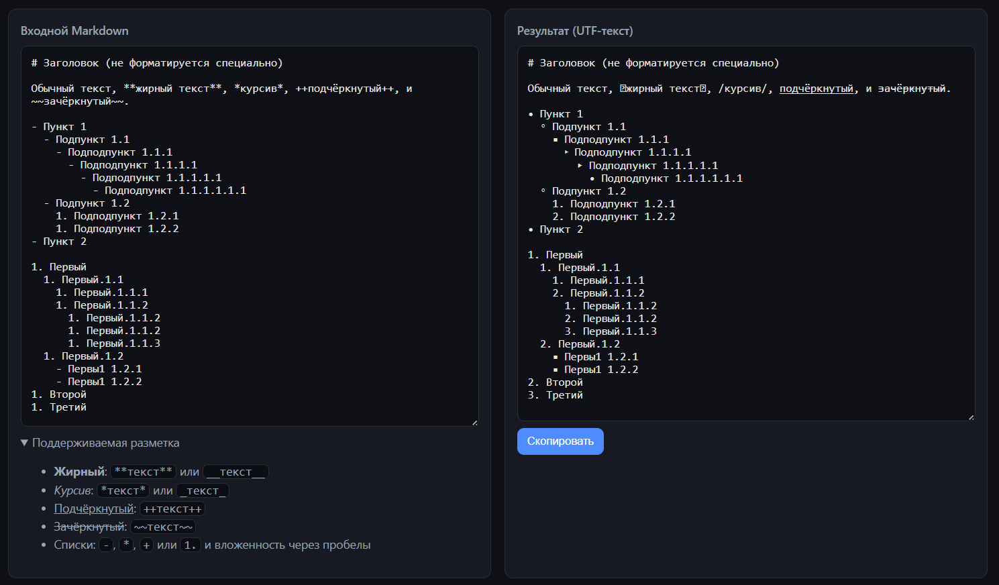

2025-11-19
Это просто очерк о том как, бывает, быстро можно сделать что-то удобоваримое не особо разбираясь в том как оно работает.

Т.к. в LinkedIn нет форматирования, а хочется, как минимум чтобы были списки:
а так же различные начертания текста:
И я хочу всё писать в markdown.
Т.к. форматирования (кроме пробелов) в заметках не предусмотрено, то начертания надо делать через вставку utf-символов. Со списками, конечно, всё куда как проще, нужен только литерал для обозначения элемента списка и пробелы для учёта вложенности.
Собственно примерно такой текст я и закинул в Cursor, финальный (на текущий момент) результат видно на картинке.
Проблем было две:
undefined;Первую ошибку он поправил с первого раза. Для работы над второй он
создал файл test.js в котором была копипаста с основного
скрипта плюс тестовая функция которая подавала на вход функции
форматирования:
1. Первый
1. Второй
1. Третийи сравнивала её вывод с ожиданием:
1. Первый
2. Второй
3. ТретийДалее он попросил у меня разрешения запустить nodejs и по кругу запускал свой тестовый код и правил его, запускал и правил. Я принципиально не вмешивался. В какой-то момент мне начало казаться что он ходит по кругу из которого уже никогда не выбертся. И вот, когда он сжёг уже 30% от бюджета токенов, его вдруг осенило и он справился!
Из приятных моментов:
А далее, так как начертания символов - это уже подстановка похожих по начертания символов из UTF, и:
я решил что форматирования списков мне вполне достаточно на текущее время. Позже, может быть, докручу ещё проверку картинок (у LI есть требования по размеру и формату) и сделаю превью поста.
PS. Меня только, после всего этого, мучает один вопрос - "А кто автор кода то теперь?". 🤔
Комментарии
Комментарии на GitHub